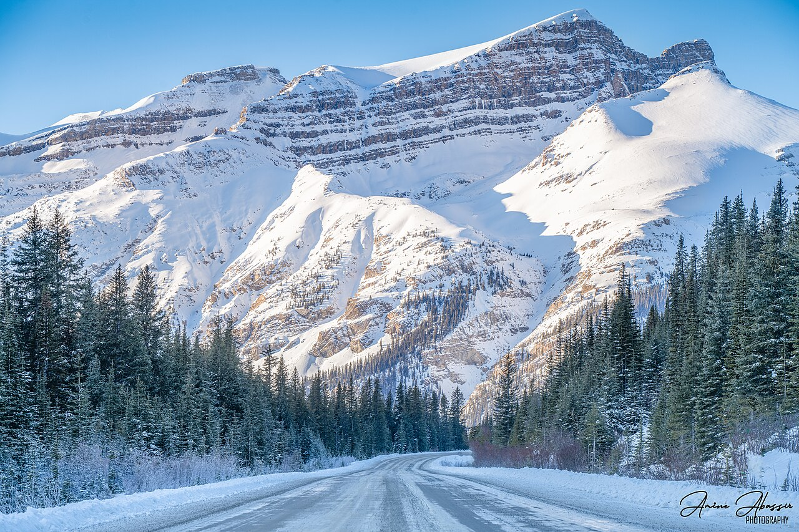
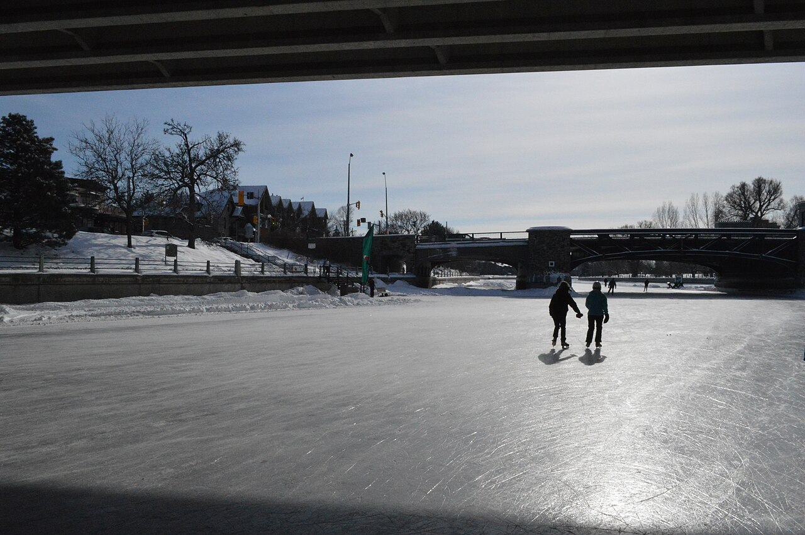
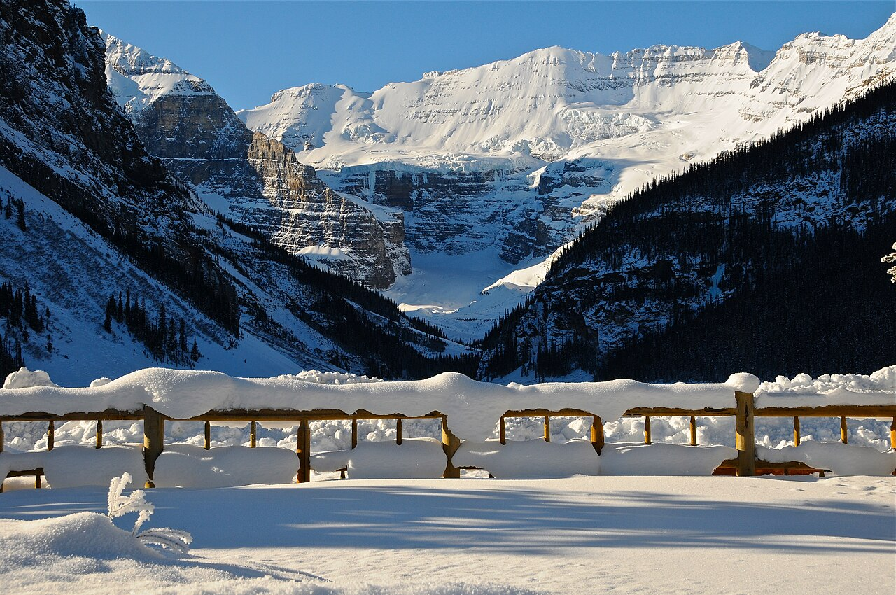
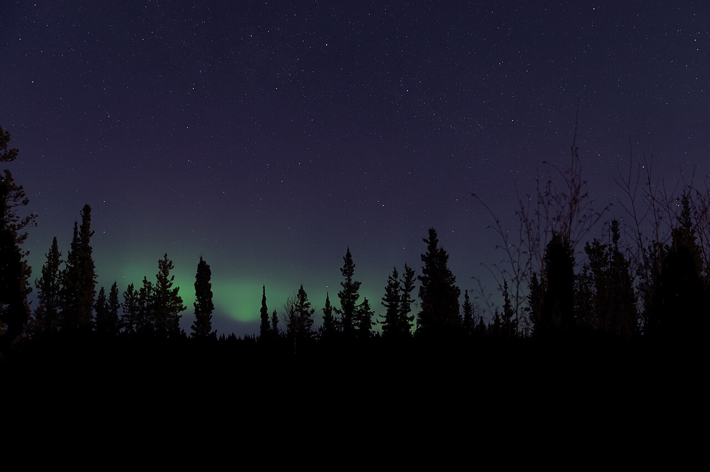
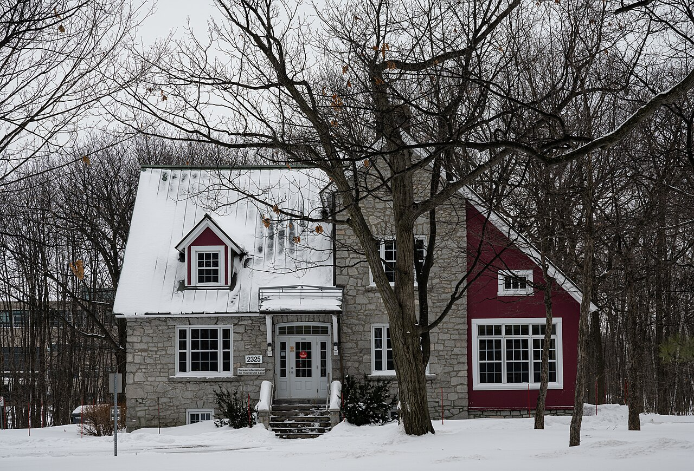
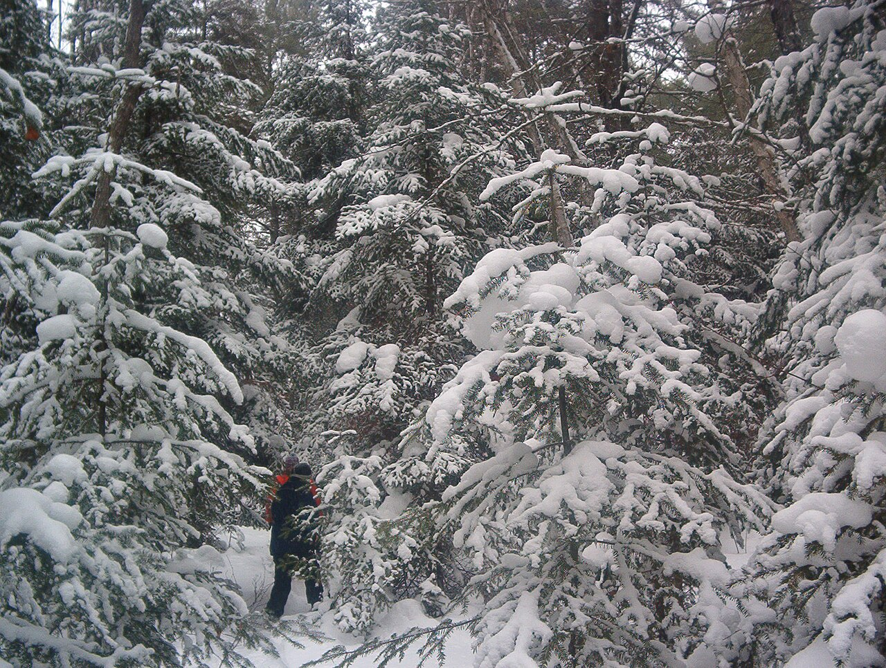
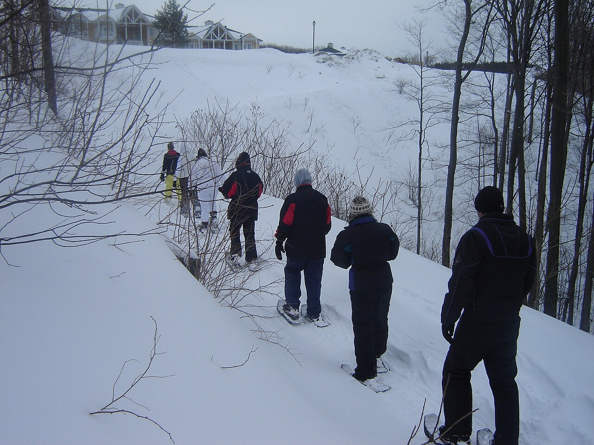
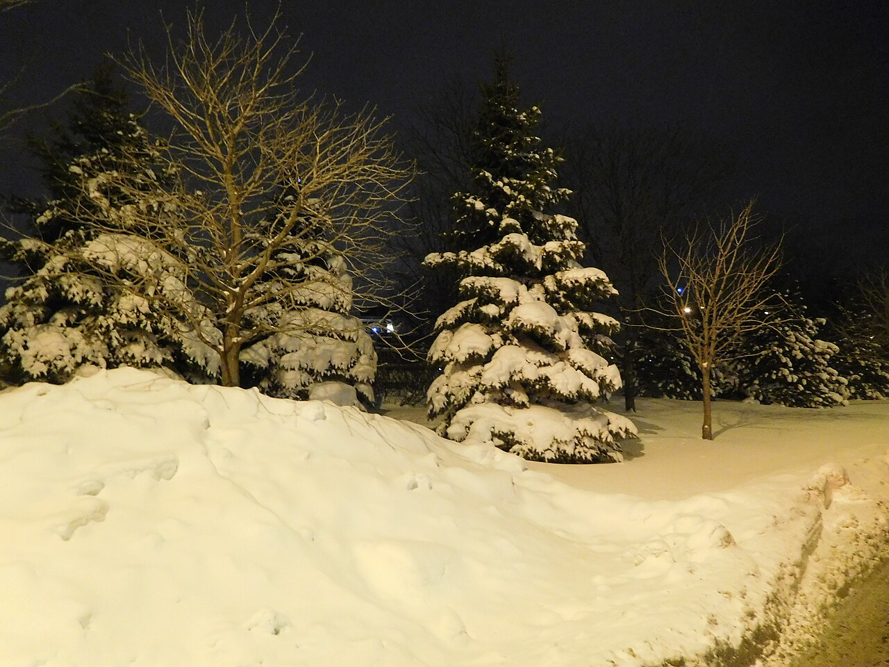
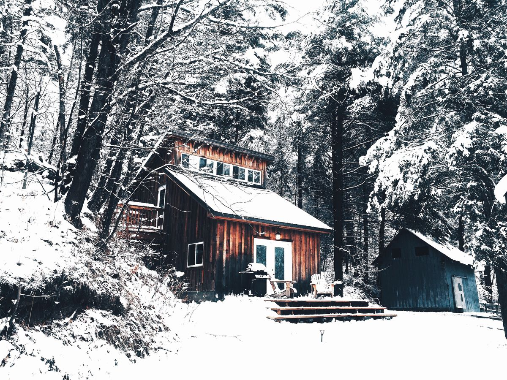

Esta página es mi proyecto final del curso de diseño responsivo. Usé fotos del invierno en Canadá para mostrar cómo se ve el país en esa temporada, y jugué con media queries para que la página se vea bien en celular, tablet y pantalla grande.
Todas las fotos son reales, tomadas en distintos lugares de Canadá durante el invierno: lagos congelados, auroras boreales, montañas nevadas y cabañas en el bosque. Si cambias el tamaño de tu ventana vas a ver cómo cambia el acomodo de las imágenes, y si tu computadora tiene activado el modo oscuro o el movimiento reducido, la página también se adapta a eso.








